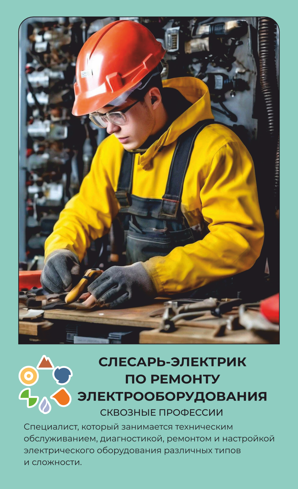

СКВОЗНЫЕ ПРОФЕССИИ
Слесарь-электрик по ремонту электрооборудования
Ремонтирует электрооборудование цеха.
Основной вид деятельности
Проводит электротехнические работы: обслуживает узлы, аппараты и арматуру специализированным оборудованием, очищает детали и элементы электрооборудования, изготавливает простые детали, устанавливает соединительные элементы (муфты, тройники и другое).
Что делает на рабочем месте
Слесарь-электрик по ремонту электрооборудования диагностирует неисправность, разбирает электрооборудование, ремонтирует и снова собирает его — в производственном цехе, автомастерской, на стройплощадке или трансформаторной подстанции, в зависимости от места работы. Обслуживает узлы, аппараты и арматуру специализированным оборудованием, чистит контакты и детали от нагара и загрязнений, а простые детали изготавливает сам на верстаке. С электромонтажными схемами работает вручную — лудит и паяет контакты, изолирует, прокладывает и сращивает провода, устанавливает муфты и другие соединительные элементы. Исправность электрических цепей проверяет мультиметром и измерителем изоляции, чтобы убедиться, что участок безопасен для дальнейшей эксплуатации. Использует и слесарный инструмент — гаечные ключи, штангенциркуль, шабер, — и электроинструмент: дрели, перфораторы, шлифовальные машины. Работает в диэлектрическом костюме, перчатках и каске, а при работе на высоте — с предохранительным поясом.
Что производит
Металл и металлические изделия, электропроводка, электрооборудование, системы освещения и другие внутренние электроустановки
Оборудование и инструменты
Спецодежда
Костюм из смешанных тканей для защиты от общих производственных загрязнений и механических воздействий с масловодоотталкивающей пропиткой, диэлектрический
Спецобувь
Ботинки, полуботинки, сапоги кожаные с жестким подноском, которая не проводит электричество и не деформируется под воздействием высоких температур, изготовлена из негорючих и диэлектрических материалов
СИЗ
Перчатки с полимерным покрытием, перчатки диэлектрические, каска, подшлемник под каску, очки защитные, пояс предохранительный
Где учиться
Это официальное название и номер специальности в колледже или вузе — он понадобится при поступлении.
Ещё варианты, куда можно поступить на эту профессию — подойдёт любой один, учиться сразу на все не нужно:
Где работать
Похожие профессии
Данные по профессии «Слесарь-электрик по ремонту электрооборудования», отрасль «Сквозные профессии». Зарплата — оценочная вилка по региону.